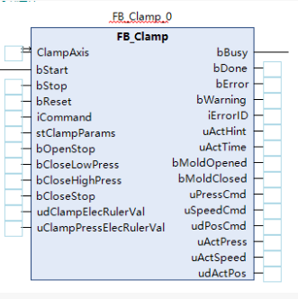
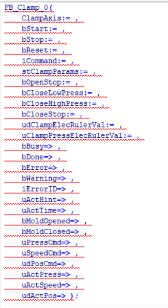

注塑机吹气功能
1. 概述
1.1 功能简介
吹气功能是注塑机的重要辅助功能，主要用于需要吹气托模的模具上，通过向模具内吹气来辅助制品冷却或脱模，提高生产效率和制品质量。该功能包含射嘴控制和左右吹气控制两个主要部分，支持多种吹气模式和灵活的时序配置。
1.2 工艺特点
- 射嘴控制：支持液压射嘴的打开和关闭控制，确保射胶过程的密封性
- 吹气模式：支持左吹气、右吹气、左右吹气等多种模式，适应不同模具需求
- 时序灵活：可设置吹气延时和吹气时间，支持开模前或开模后触发
- 射出检测：支持射出终点检测功能，自动学习检测点，确保射胶质量
- 平台兼容性：支持Luban平台（基于Beremiz二次开发）运行，采用标准IEC 61131-3 ST语法实现
1.3 技术架构
本功能采用分层架构设计，参考研发部提供的液压系统建模方案，结合倍福TF8560塑料技术功能标准，实现模块化、标准化设计。
graph TB
subgraph 工艺应用层
A1[FB_BlowAir 吹气控制]
A2[FB_NozzleControl 射嘴控制]
end
subgraph 控制层
C1[FB_ValveControl 阀门控制]
end
subgraph 驱动层
D1[FB_DriverHyd 液压驱动]
end
subgraph 数据层
S1[ST_BlowAirParams 吹气参数]
S2[ST_NozzleParams 射嘴参数]
end
subgraph 物理层
P1[液压系统]
P2[电磁阀]
P3[传感器]
end
A1 --> C1
A2 --> C1
C1 --> D1
C1 --> S1
C1 --> S2
D1 --> P1
S1 --> P2
S2 --> P3
2. 核心控制机制
2.1 射嘴控制机制
射嘴控制采用时间控制方式，确保射胶过程的密封性和安全性：
flowchart TD
Start[射胶开始] --> CheckEnable{液压射嘴启用?}
CheckEnable -->|否| DirectInject[直接射胶]
CheckEnable -->|是| OpenNozzle[打开射嘴]
OpenNozzle --> OpenTimer{射嘴开时间到?}
OpenTimer -->|否| OpenNozzle
OpenTimer -->|是| Inject[执行射胶]
Inject --> InjectComplete{射胶完成?}
InjectComplete -->|否| Inject
InjectComplete -->|是| CloseNozzle[关闭射嘴]
CloseNozzle --> CloseTimer{射嘴关时间到?}
CloseTimer -->|否| CloseNozzle
CloseTimer -->|是| Complete[射嘴控制完成]
DirectInject --> Complete
classDef action fill:#e6f7ff,stroke:#1890ff,stroke-width:2px,rounded
classDef decision fill:#fff7e6,stroke:#fa8c16,stroke-width:2px,rounded
classDef complete fill:#f6ffed,stroke:#52c41a,stroke-width:2px,rounded
class OpenNozzle,Inject,CloseNozzle action
class CheckEnable,OpenTimer,InjectComplete,CloseTimer decision
class Start,DirectInject,Complete complete
- 射嘴打开控制：
- 触发条件：射胶开始且液压射嘴启用
- 对应参数：射嘴开压力、射嘴开流量、射嘴开时间
- 射胶执行：
- 触发条件：射嘴打开时间到达
- 对应参数：射胶参数（由射胶功能控制）
- 射嘴关闭控制：
- 触发条件：射胶完成
- 对应参数：射嘴关压力、射嘴关流量、射嘴关时间
2.2 吹气控制机制
吹气控制采用时序控制方式，支持多种吹气模式和灵活的触发时机：
flowchart TD
Start[吹气触发] --> CheckMode{检查吹气模式}
CheckMode -->|不用| EndNode[结束]
CheckMode -->|左吹气/右吹气/左右吹气| CheckDelay{检查延时}
CheckDelay -->|需要延时| Delay[延时等待]
CheckDelay -->|无需延时| Blow[执行吹气]
Delay --> Blow
Blow --> CheckTime{检查吹气时间}
CheckTime -->|未到| Blow
CheckTime -->|已到| EndNode
classDef action fill:#e6f7ff,stroke:#1890ff,stroke-width:2px,rounded
classDef decision fill:#fff7e6,stroke:#fa8c16,stroke-width:2px,rounded
classDef default fill:#f6ffed,stroke:#52c41a,stroke-width:2px,rounded
class Delay,Blow action
class CheckMode,CheckDelay,CheckTime decision
class Start,EndNode default
- 吹气模式选择：
- 不用：不启用吹气功能
- 左吹气：仅左侧吹气
- 右吹气：仅右侧吹气
- 左右吹气：两侧同时吹气
- 吹气延时控制：
- 触发条件：吹气触发信号到达
- 对应参数：左/右吹气延时
- 吹气时间控制：
- 触发条件：延时结束或无延时
- 对应参数：左/右吹气时间
- 吹气触发时机：
- 开模前：在开模动作开始前执行吹气
- 开模完：在开模动作完成后执行吹气
2.3 射出检测机制
射出检测采用自动学习方式，确保射胶质量的稳定性：
flowchart TD
Start[射胶开始] --> CheckEnable{射出检测启用?}
CheckEnable -->|否| NoCheck[不检测]
CheckEnable -->|是| Record[记录射出终点]
Record --> Count{记录次数<20?}
Count -->|是| NextShot[下一模]
NextShot --> Record
Count -->|否| Calculate[计算平均值]
Calculate --> SetCheckPoint[设置检测点]
SetCheckPoint --> Check{射出终点偏差检测}
Check -->|偏差≤允许值| Normal[正常]
Check -->|偏差>允许值| Alarm[报警]
NoCheck --> Normal
Alarm --> EndNode[结束]
Normal --> EndNode
classDef action fill:#e6f7ff,stroke:#1890ff,stroke-width:2px,rounded
classDef decision fill:#fff7e6,stroke:#fa8c16,stroke-width:2px,rounded
classDef error fill:#fff2f0,stroke:#ff4d4f,stroke-width:2px,rounded
classDef default fill:#f6ffed,stroke:#52c41a,stroke-width:2px,rounded
class Record,Calculate,SetCheckPoint action
class CheckEnable,Count,Check decision
class Alarm error
class Start,NoCheck,NextShot,Normal,EndNode default
- 自动学习阶段：
- 触发条件：射出检测启用且记录次数<20
- 对应参数：射出检测启用标志
- 检测点设置：
- 触发条件：记录20次射出终点后
- 对应参数：射出检测点
- 偏差检测：
- 触发条件：射出终点到达
- 对应参数：允许偏差
3. 功能阶段定义
3.1 射嘴控制功能阶段
| 阶段编号 | 阶段名称 | 主要功能 | 控制参数 | 阶段转换条件 |
|---|---|---|---|---|
| 1 | 射嘴准备 | 初始化参数 | 无 | 射胶开始信号触发 |
| 2 | 射嘴打开 | 打开射嘴 | 压力、流量、时间 | 射嘴开时间到达 |
| 3 | 射胶执行 | 执行射胶 | 射胶参数（由射胶功能控制） | 射胶完成信号触发 |
| 4 | 射嘴关闭 | 关闭射嘴 | 压力、流量、时间 | 射嘴关时间到达 |
| 5 | 射嘴完成 | 保持关闭状态 | 无 | 到达完成状态 |
3.2 吹气控制功能阶段
| 阶段编号 | 阶段名称 | 主要功能 | 控制参数 | 阶段转换条件 |
|---|---|---|---|---|
| 1 | 吹气准备 | 初始化参数 | 无 | 吹气触发信号到达 |
| 2 | 吹气延时 | 等待延时时间 | 延时时间 | 延时时间到达 |
| 3 | 吹气执行 | 执行吹气动作 | 压力、流量、时间 | 吹气时间到达 |
| 4 | 吹气完成 | 停止吹气 | 无 | 到达完成状态 |
4. 控制流程
4.1 射嘴控制流程
4.1.1 射嘴控制流程示意图
flowchart TD
Start[初始状态] -->|射胶开始| Step1[步1: 射嘴准备]
Step1 --> CheckEnable{液压射嘴启用?}
CheckEnable -->|否| Direct[直接射胶]
CheckEnable -->|是| Step2[步2: 射嘴打开]
Step2 -->|射嘴开时间到| Step3[步3: 射胶执行]
Direct --> Step3
Step3 -->|射胶完成| Step4[步4: 射嘴关闭]
Step4 -->|射嘴关时间到| Step5[步5: 射嘴完成]
classDef step fill:#e6f7ff,stroke:#1890ff,stroke-width:2px,rounded,font-weight:bold
classDef complete fill:#f6ffed,stroke:#52c41a,stroke-width:2px,rounded,font-weight:bold
classDef decision fill:#fffbe6,stroke:#fa8c16,stroke-width:2px,rounded,font-weight:bold
class Step1,Step2,Step3,Step4 step
class Step5,Start,Direct complete
class CheckEnable decision
style Start fill:#f0f8ff,stroke:#1e90ff,stroke-width:3px
style Step5 fill:#f0fff0,stroke:#32cd32,stroke-width:3px
style CheckEnable fill:#fffacd,stroke:#daa520,stroke-width:2px
4.1.2 射嘴控制序列图
sequenceDiagram
participant 系统
participant 射嘴控制
participant 射胶控制
participant 执行机构
系统->>射嘴控制: 射胶开始
射嘴控制->>射嘴控制: 步1: 射嘴准备
alt 液压射嘴启用
射嘴控制->>执行机构: 步2: 射嘴打开
执行机构-->>射嘴控制: 射嘴开时间到
射嘴控制->>射胶控制: 允许射胶
射胶控制->>执行机构: 执行射胶
射胶控制-->>射嘴控制: 射胶完成
射嘴控制->>执行机构: 步4: 射嘴关闭
执行机构-->>射嘴控制: 射嘴关时间到
射嘴控制->>射嘴控制: 步5: 射嘴完成
射嘴控制-->>系统: 射嘴控制完成
else 液压射嘴不启用
射嘴控制->>射胶控制: 允许射胶
射胶控制->>执行机构: 执行射胶
射胶控制-->>射嘴控制: 射胶完成
射嘴控制->>射嘴控制: 步5: 射嘴完成
射嘴控制-->>系统: 射嘴控制完成
end
4.2 吹气控制流程
4.2.1 吹气控制流程示意图
flowchart TD
Start[初始状态] -->|吹气触发| Step1[步1: 吹气准备]
Step1 --> CheckMode{检查吹气模式}
CheckMode -->|不用| EndNode[结束]
CheckMode -->|左吹气/右吹气/左右吹气| CheckDelay{检查延时}
CheckDelay -->|需要延时| Step2[步2: 吹气延时]
CheckDelay -->|无需延时| Step3[步3: 吹气执行]
Step2 -->|延时时间到| Step3
Step3 --> CheckTime{检查吹气时间}
CheckTime -->|未到| Step3
CheckTime -->|已到| Step4[步4: 吹气完成]
Step4 --> EndNode
classDef step fill:#e6f7ff,stroke:#1890ff,stroke-width:2px,rounded,font-weight:bold
classDef complete fill:#f6ffed,stroke:#52c41a,stroke-width:2px,rounded,font-weight:bold
classDef decision fill:#fffbe6,stroke:#fa8c16,stroke-width:2px,rounded,font-weight:bold
class Step1,Step2,Step3,Step4 step
class Start,EndNode complete
class CheckMode,CheckDelay,CheckTime decision
style Start fill:#f0f8ff,stroke:#1e90ff,stroke-width:3px
style EndNode fill:#f0fff0,stroke:#32cd32,stroke-width:3px
style CheckMode fill:#fff0f5,stroke:#ff1493,stroke-width:2px
style CheckDelay fill:#fffacd,stroke:#daa520,stroke-width:2px
style CheckTime fill:#fffacd,stroke:#daa520,stroke-width:2px
4.2.2 吹气控制序列图
sequenceDiagram
participant 系统
participant 吹气控制
participant 执行机构
系统->>吹气控制: 吹气触发
吹气控制->>吹气控制: 步1: 吹气准备
alt 吹气模式=不用
吹气控制-->>系统: 吹气控制完成
else 吹气模式≠不用
alt 需要延时
吹气控制->>吹气控制: 步2: 吹气延时
吹气控制-->>吹气控制: 延时时间到
end
吹气控制->>执行机构: 步3: 吹气执行
alt 左吹气模式
执行机构-->>吹气控制: 左吹气时间到
else 右吹气模式
执行机构-->>吹气控制: 右吹气时间到
else 左右吹气模式
执行机构-->>吹气控制: 左吹气时间到
执行机构-->>吹气控制: 右吹气时间到
end
吹气控制->>吹气控制: 步4: 吹气完成
吹气控制-->>系统: 吹气控制完成
end
⚠️ 重要说明：
- 吹气触发时机可选择开模前或开模完，需根据模具特性合理设置
- 吹气模式支持左吹气、右吹气、左右吹气三种模式，可根据模具结构选择
- 吹气延时和吹气时间需根据制品特性合理设置，确保吹气效果
5. 数据结构与功能块
5.1 核心数据结构
5.1.1 ST_NozzleParams 结构体
用途：封装射嘴的所有工艺参数
| 字段名 | 类型 | 有效范围 | 初始值 | 说明 |
|---|---|---|---|---|
iOpenPressure |
INT | 0-1000 | 250 | 射嘴开压力(bar*10) |
iOpenFlow |
INT | 0-1000 | 200 | 射嘴开流量(%*10) |
iOpenTime |
INT | 0-100 | 10 | 射嘴开时间(s*10) |
iClosePressure |
INT | 0-1000 | 360 | 射嘴关压力(bar*10) |
iCloseFlow |
INT | 0-1000 | 270 | 射嘴关流量(%*10) |
iCloseTime |
INT | 0-100 | 10 | 射嘴关时间(s*10) |
5.1.2 ST_BlowAirParams 结构体
用途：封装吹气的所有工艺参数
| 字段名 | 类型 | 有效范围 | 初始值 | 说明 |
|---|---|---|---|---|
iLeftTime |
INT | 0-100 | 0 | 左吹气时间(s*10) |
iLeftDelay |
INT | 0-100 | 0 | 左吹气延时(s*10) |
iLeftStartPos |
INT | 1-2 | 2 | 左吹气开始位置(1=开模前,2=开模完) |
iRightTime |
INT | 0-100 | 0 | 右吹气时间(s*10) |
iRightDelay |
INT | 0-100 | 0 | 右吹气延时(s*10) |
iRightStartPos |
INT | 1-2 | 2 | 右吹气开始位置(1=开模前,2=开模完) |
iBlowAirMode |
INT | 0-3 | 0 | 吹气模式(0=不用,1=左吹气,2=右吹气,3=左右吹气) |
5.1.3 ST_InjectionCheckParams 结构体
用途：封装射出检测的所有工艺参数
| 字段名 | 类型 | 有效范围 | 初始值 | 说明 |
|---|---|---|---|---|
iAllowDeviation |
INT | 0-1000 | 0 | 允许偏差(mm*10) |
iCheckPoint |
INT | 0-10000 | 0 | 射出检测点(mm*10) |
5.2 功能块定义
5.2.1 FB_BlowAir 功能块
用途：完整的吹气控制功能块，集成左吹气和右吹气控制 指令格式：
| 指令 | 名称 | FB/FC | LD/FBD表示 | ST表现 | 说明 |
|---|---|---|---|---|---|
FB_BlowAir0 |
吹气 | FB |  |
 |
- |
输入输出参数：
| 参数名 | 名称 | 类型 | 有效范围 | 初始值 | 说明 |
|---|---|---|---|---|---|
BlowAirAxis |
吹气轴 | - | - | 吹气轴引用 |
输入参数：
| 参数名 | 名称 | 类型 | 有效范围 | 初始值 | 说明 |
|---|---|---|---|---|---|
bExecute |
执行触发 | BOOL | FALSE,TRUE | FALSE | 执行触发信号，上升沿启动 |
stBlowAirParams |
吹气参数 | ST_BlowAirParams | - | - | 上位机设定参数输入 |
bAutoMode |
自动模式 | BOOL | FALSE,TRUE | FALSE | 自动模式标志 |
bManualMode |
手动模式 | BOOL | FALSE,TRUE | TRUE | 手动模式标志 |
bFunctionEnable |
功能使能 | BOOL | FALSE,TRUE | TRUE | 吹气功能使能 |
bLeftBlowCmd |
左吹气命令 | BOOL | FALSE,TRUE | FALSE | 左吹气命令 |
bRightBlowCmd |
右吹气命令 | BOOL | FALSE,TRUE | FALSE | 右吹气命令 |
bOpenComplete |
开模完成 | BOOL | FALSE,TRUE | FALSE | 开模完成信号 |
bEStop |
急停 | BOOL | FALSE,TRUE | FALSE | 急停信号 |
输出参数：
| 参数名 | 名称 | 类型 | 有效范围 | 初始值 | 说明 |
|---|---|---|---|---|---|
bLeftBlowOut |
左吹气输出 | BOOL | FALSE,TRUE | FALSE | 左吹气输出 |
bRightBlowOut |
右吹气输出 | BOOL | FALSE,TRUE | FALSE | 右吹气输出 |
bInProgress |
正在运行 | BOOL | FALSE,TRUE | FALSE | 正在运行标志 |
bLeftBlowing |
左吹气中 | BOOL | FALSE,TRUE | FALSE | 左吹气中标志 |
bRightBlowing |
右吹气中 | BOOL | FALSE,TRUE | FALSE | 右吹气中标志 |
bCommandComplete |
命令完成 | BOOL | FALSE,TRUE | FALSE | 命令完成信号 |
bError |
错误状态 | BOOL | FALSE,TRUE | FALSE | 错误信号 |
iErrorCode |
错误代码 | INT | 0-65535 | 0 | 错误代码 |
5.2.2 FB_NozzleControl 功能块
用途：完整的射嘴控制功能块，集成射嘴打开和关闭控制 指令格式：
| 指令 | 名称 | FB/FC | LD/FBD表示 | ST表现 | 说明 |
|---|---|---|---|---|---|
FB_NozzleControl0 |
射嘴 | FB | - |
输入输出参数：
| 参数名 | 名称 | 类型 | 有效范围 | 初始值 | 说明 |
|---|---|---|---|---|---|
NozzleAxis |
射嘴轴 | - | - | 射嘴轴引用 |
输入参数：
| 参数名 | 名称 | 类型 | 有效范围 | 初始值 | 说明 |
|---|---|---|---|---|---|
bExecute |
执行触发 | BOOL | FALSE,TRUE | FALSE | 执行触发信号，上升沿启动 |
stNozzleParams |
射嘴参数 | ST_NozzleParams | - | - | 上位机设定参数输入 |
bAutoMode |
自动模式 | BOOL | FALSE,TRUE | FALSE | 自动模式标志 |
bManualMode |
手动模式 | BOOL | FALSE,TRUE | TRUE | 手动模式标志 |
bFunctionEnable |
功能使能 | BOOL | FALSE,TRUE | TRUE | 射嘴功能使能 |
bOpenCmd |
射嘴开命令 | BOOL | FALSE,TRUE | FALSE | 射嘴开命令 |
bCloseCmd |
射嘴关命令 | BOOL | FALSE,TRUE | FALSE | 射嘴关命令 |
bInjectionComplete |
射胶完成 | BOOL | FALSE,TRUE | FALSE | 射胶完成信号 |
bEStop |
急停 | BOOL | FALSE,TRUE | FALSE | 急停信号 |
输出参数：
| 参数名 | 名称 | 类型 | 有效范围 | 初始值 | 说明 |
|---|---|---|---|---|---|
bOpenOut |
射嘴开输出 | BOOL | FALSE,TRUE | FALSE | 射嘴开输出 |
bCloseOut |
射嘴关输出 | BOOL | FALSE,TRUE | FALSE | 射嘴关输出 |
bInjectionAllowed |
允许射胶 | BOOL | FALSE,TRUE | FALSE | 允许射胶信号 |
bInProgress |
正在运行 | BOOL | FALSE,TRUE | FALSE | 正在运行标志 |
bOpening |
射嘴开中 | BOOL | FALSE,TRUE | FALSE | 射嘴开中标志 |
bClosing |
射嘴关中 | BOOL | FALSE,TRUE | FALSE | 射嘴关中标志 |
bCommandComplete |
命令完成 | BOOL | FALSE,TRUE | FALSE | 命令完成信号 |
bError |
错误状态 | BOOL | FALSE,TRUE | FALSE | 错误信号 |
iErrorCode |
错误代码 | INT | 0-65535 | 0 | 错误代码 |
5.3 枚举类型定义
5.3.1 吹气状态 E_BlowAirState
| 值 | 名称 | 说明 |
|---|---|---|
| 0 | eState_Idle | 空闲状态 |
| 1 | eState_Prepare | 准备状态 |
| 2 | eState_Delay | 延时状态 |
| 3 | eState_Blowing | 吹气中 |
| 4 | eState_Complete | 完成状态 |
| 5 | eState_Error | 错误状态 |
5.3.2 射嘴状态 E_NozzleState
| 值 | 名称 | 说明 |
|---|---|---|
| 0 | eState_Idle | 空闲状态 |
| 1 | eState_Prepare | 准备状态 |
| 2 | eState_Opening | 射嘴开中 |
| 3 | eState_Closing | 射嘴关中 |
| 4 | eState_Complete | 完成状态 |
| 5 | eState_Error | 错误状态 |
6. 核心参数说明
6.1 射嘴参数
6.1.1 射嘴开参数
| 参数名 | 名称 | 类型 | 有效范围 | 初始值 | 说明 |
|---|---|---|---|---|---|
iOpenPressure |
射嘴开压力 | INT | 0-1000 | 250 | 射嘴打开压力(bar*10) |
iOpenFlow |
射嘴开流量 | INT | 0-1000 | 200 | 射嘴打开流量(%*10) |
iOpenTime |
射嘴开时间 | INT | 0-100 | 10 | 射嘴打开时间(s*10) |
6.1.2 射嘴关参数
| 参数名 | 名称 | 类型 | 有效范围 | 初始值 | 说明 |
|---|---|---|---|---|---|
iClosePressure |
射嘴关压力 | INT | 0-1000 | 360 | 射嘴关闭压力(bar*10) |
iCloseFlow |
射嘴关流量 | INT | 0-1000 | 270 | 射嘴关闭流量(%*10) |
iCloseTime |
射嘴关时间 | INT | 0-100 | 10 | 射嘴关闭时间(s*10) |
6.2 吹气参数
6.2.1 左吹气参数
| 参数名 | 名称 | 类型 | 有效范围 | 初始值 | 说明 |
|---|---|---|---|---|---|
iLeftTime |
左吹气时间 | INT | 0-100 | 0 | 左吹气时间(s*10) |
iLeftDelay |
左吹气延时 | INT | 0-100 | 0 | 左吹气延时(s*10) |
iLeftStartPos |
左吹气开始位置 | INT | 1-2 | 2 | 左吹气开始位置(1=开模前,2=开模完) |
6.2.2 右吹气参数
| 参数名 | 名称 | 类型 | 有效范围 | 初始值 | 说明 |
|---|---|---|---|---|---|
iRightTime |
右吹气时间 | INT | 0-100 | 0 | 右吹气时间(s*10) |
iRightDelay |
右吹气延时 | INT | 0-100 | 0 | 右吹气延时(s*10) |
iRightStartPos |
右吹气开始位置 | INT | 1-2 | 2 | 右吹气开始位置(1=开模前,2=开模完) |
6.2.3 吹气模式参数
| 参数名 | 名称 | 类型 | 有效范围 | 初始值 | 说明 |
|---|---|---|---|---|---|
iBlowAirMode |
吹气模式 | INT | 0-3 | 0 | 吹气模式(0=不用,1=左吹气,2=右吹气,3=左右吹气) |
6.3 射出检测参数
| 参数名 | 名称 | 类型 | 有效范围 | 初始值 | 说明 |
|---|---|---|---|---|---|
iAllowDeviation |
允许偏差 | INT | 0-1000 | 0 | 允许偏差(mm*10) |
iCheckPoint |
射出检测点 | INT | 0-10000 | 0 | 射出检测点(mm*10) |
7. 功能块实现
7.1 FB_BlowAir 功能块实现
FUNCTION_BLOCK FB_BlowAir
VAR_INPUT
bExecute : BOOL; // 执行触发信号
stBlowAirParams : ST_BlowAirParams; // 吹气参数
bAutoMode : BOOL; // 自动模式标志
bManualMode : BOOL; // 手动模式标志
bFunctionEnable : BOOL; // 功能使能
bLeftBlowCmd : BOOL; // 左吹气命令
bRightBlowCmd : BOOL; // 右吹气命令
bOpenComplete : BOOL; // 开模完成信号
bEStop : BOOL; // 急停信号
END_VAR
VAR_OUTPUT
bLeftBlowOut : BOOL; // 左吹气输出
bRightBlowOut : BOOL; // 右吹气输出
bInProgress : BOOL; // 正在运行标志
bLeftBlowing : BOOL; // 左吹气中标志
bRightBlowing : BOOL; // 右吹气中标志
bCommandComplete : BOOL; // 命令完成信号
bError : BOOL; // 错误信号
iErrorCode : INT; // 错误代码
END_VAR
VAR
eState : E_BlowAirState := eState_Idle; // 吹气状态
tLeftDelayTimer : TON; // 左吹气延时计时器
tLeftBlowTimer : TON; // 左吹气计时器
tRightDelayTimer : TON; // 右吹气延时计时器
tRightBlowTimer : TON; // 右吹气计时器
xLeftStartFlag : BOOL := FALSE; // 左侧开始标志
xRightStartFlag : BOOL := FALSE; // 右侧开始标志
rExecuteEdge : R_TRIG; // 执行触发边沿检测
END_VAR
// 执行触发边沿检测
rExecuteEdge(CLK := bExecute);
// 状态机控制
CASE eState OF
eState_Idle:
// 空闲状态
bLeftBlowOut := FALSE;
bRightBlowOut := FALSE;
bInProgress := FALSE;
bLeftBlowing := FALSE;
bRightBlowing := FALSE;
bCommandComplete := FALSE;
bError := FALSE;
iErrorCode := 0;
// 检查启动条件
IF bFunctionEnable AND rExecuteEdge.Q THEN
IF stBlowAirParams.iBlowAirMode > 0 THEN
eState := eState_Prepare;
END_IF
END_IF
eState_Prepare:
// 准备状态
bInProgress := TRUE;
// 根据吹气模式设置开始标志
CASE stBlowAirParams.iBlowAirMode OF
1: // 左吹气
xLeftStartFlag := TRUE;
IF stBlowAirParams.iLeftDelay > 0 THEN
tLeftDelayTimer(IN := TRUE, PT := stBlowAirParams.iLeftDelay * 100);
eState := eState_Delay;
ELSE
eState := eState_Blowing;
END_IF
2: // 右吹气
xRightStartFlag := TRUE;
IF stBlowAirParams.iRightDelay > 0 THEN
tRightDelayTimer(IN := TRUE, PT := stBlowAirParams.iRightDelay * 100);
eState := eState_Delay;
ELSE
eState := eState_Blowing;
END_IF
3: // 左右吹气
xLeftStartFlag := TRUE;
xRightStartFlag := TRUE;
IF stBlowAirParams.iLeftDelay > 0 OR stBlowAirParams.iRightDelay > 0 THEN
tLeftDelayTimer(IN := TRUE, PT := stBlowAirParams.iLeftDelay * 100);
tRightDelayTimer(IN := TRUE, PT := stBlowAirParams.iRightDelay * 100);
eState := eState_Delay;
ELSE
eState := eState_Blowing;
END_IF
END_CASE
eState_Delay:
// 延时状态
// 检查延时是否完成
IF (NOT xLeftStartFlag OR tLeftDelayTimer.Q) AND (NOT xRightStartFlag OR tRightDelayTimer.Q) THEN
eState := eState_Blowing;
END_IF
eState_Blowing:
// 吹气状态
// 左侧吹气控制
IF xLeftStartFlag THEN
IF tLeftDelayTimer.Q OR stBlowAirParams.iLeftDelay = 0 THEN
bLeftBlowOut := TRUE;
bLeftBlowing := TRUE;
IF NOT tLeftBlowTimer.IN THEN
tLeftBlowTimer(IN := TRUE, PT := stBlowAirParams.iLeftTime * 100);
END_IF
END_IF
IF tLeftBlowTimer.Q THEN
bLeftBlowOut := FALSE;
bLeftBlowing := FALSE;
xLeftStartFlag := FALSE;
END_IF
END_IF
// 右侧吹气控制
IF xRightStartFlag THEN
IF tRightDelayTimer.Q OR stBlowAirParams.iRightDelay = 0 THEN
bRightBlowOut := TRUE;
bRightBlowing := TRUE;
IF NOT tRightBlowTimer.IN THEN
tRightBlowTimer(IN := TRUE, PT := stBlowAirParams.iRightTime * 100);
END_IF
END_IF
IF tRightBlowTimer.Q THEN
bRightBlowOut := FALSE;
bRightBlowing := FALSE;
xRightStartFlag := FALSE;
END_IF
END_IF
// 检查是否完成
IF NOT xLeftStartFlag AND NOT xRightStartFlag THEN
eState := eState_Complete;
END_IF
eState_Complete:
// 完成状态
bCommandComplete := TRUE;
bInProgress := FALSE;
// 复位
IF NOT bExecute THEN
eState := eState_Idle;
END_IF
eState_Error:
// 错误状态
bError := TRUE;
bInProgress := FALSE;
// 复位
IF NOT bExecute THEN
eState := eState_Idle;
END_IF
END_CASE
// 急停处理
IF bEStop THEN
bLeftBlowOut := FALSE;
bRightBlowOut := FALSE;
bInProgress := FALSE;
bLeftBlowing := FALSE;
bRightBlowing := FALSE;
eState := eState_Idle;
END_IF
7.2 FB_NozzleControl 功能块实现
FUNCTION_BLOCK FB_NozzleControl
VAR_INPUT
bExecute : BOOL; // 执行触发信号
stNozzleParams : ST_NozzleParams; // 射嘴参数
bAutoMode : BOOL; // 自动模式标志
bManualMode : BOOL; // 手动模式标志
bFunctionEnable : BOOL; // 功能使能
bOpenCmd : BOOL; // 射嘴开命令
bCloseCmd : BOOL; // 射嘴关命令
bInjectionComplete : BOOL; // 射胶完成信号
bEStop : BOOL; // 急停信号
END_VAR
VAR_OUTPUT
bOpenOut : BOOL; // 射嘴开输出
bCloseOut : BOOL; // 射嘴关输出
bInjectionAllowed : BOOL; // 允许射胶信号
bInProgress : BOOL; // 正在运行标志
bOpening : BOOL; // 射嘴开中标志
bClosing : BOOL; // 射嘴关中标志
bCommandComplete : BOOL; // 命令完成信号
bError : BOOL; // 错误信号
iErrorCode : INT; // 错误代码
END_VAR
VAR
eState : E_NozzleState := eState_Idle; // 射嘴状态
tOpenTimer : TON; // 射嘴开计时器
tCloseTimer : TON; // 射嘴关计时器
rExecuteEdge : R_TRIG; // 执行触发边沿检测
END_VAR
// 执行触发边沿检测
rExecuteEdge(CLK := bExecute);
// 状态机控制
CASE eState OF
eState_Idle:
// 空闲状态
bOpenOut := FALSE;
bCloseOut := FALSE;
bInjectionAllowed := FALSE;
bInProgress := FALSE;
bOpening := FALSE;
bClosing := FALSE;
bCommandComplete := FALSE;
bError := FALSE;
iErrorCode := 0;
// 检查启动条件
IF bFunctionEnable AND rExecuteEdge.Q THEN
IF bOpenCmd THEN
eState := eState_Prepare;
ELSIF bCloseCmd THEN
eState := eState_Prepare;
END_IF
END_IF
eState_Prepare:
// 准备状态
bInProgress := TRUE;
// 根据命令选择操作
IF bOpenCmd THEN
eState := eState_Opening;
ELSIF bCloseCmd THEN
eState := eState_Closing;
END_IF
eState_Opening:
// 射嘴开状态
bOpenOut := TRUE;
bOpening := TRUE;
bInjectionAllowed := FALSE;
// 启动计时器
IF NOT tOpenTimer.IN THEN
tOpenTimer(IN := TRUE, PT := stNozzleParams.iOpenTime * 100);
END_IF
// 检查是否完成
IF tOpenTimer.Q THEN
bOpenOut := FALSE;
bOpening := FALSE;
bInjectionAllowed := TRUE;
eState := eState_Complete;
END_IF
eState_Closing:
// 射嘴关状态
bCloseOut := TRUE;
bClosing := TRUE;
bInjectionAllowed := FALSE;
// 启动计时器
IF NOT tCloseTimer.IN THEN
tCloseTimer(IN := TRUE, PT := stNozzleParams.iCloseTime * 100);
END_IF
// 检查是否完成
IF tCloseTimer.Q THEN
bCloseOut := FALSE;
bClosing := FALSE;
eState := eState_Complete;
END_IF
eState_Complete:
// 完成状态
bCommandComplete := TRUE;
bInProgress := FALSE;
// 复位
IF NOT bExecute THEN
eState := eState_Idle;
END_IF
eState_Error:
// 错误状态
bError := TRUE;
bInProgress := FALSE;
// 复位
IF NOT bExecute THEN
eState := eState_Idle;
END_IF
END_CASE
// 急停处理
IF bEStop THEN
bOpenOut := FALSE;
bCloseOut := FALSE;
bInjectionAllowed := FALSE;
bInProgress := FALSE;
bOpening := FALSE;
bClosing := FALSE;
eState := eState_Idle;
END_IF
8. 安全保护机制
8.1 吹气安全保护
| 保护类型 | 保护机制 | 触发条件 | 保护动作 |
|---|---|---|---|
| 超时保护 | 吹气时间限制 | 吹气时间超过设定值 | 停止吹气，报警 |
| 互锁保护 | 吹气互锁 | 吹气过程中不允许其他动作 | 暂停其他动作 |
| 压力保护 | 吹气压力限制 | 吹气压力超过设定值 | 停止吹气，报警 |
8.2 射嘴安全保护
| 保护类型 | 保护机制 | 触发条件 | 保护动作 |
|---|---|---|---|
| 超时保护 | 射嘴开/关时间限制 | 射嘴开/关时间超过设定值 | 停止射嘴动作，报警 |
| 互锁保护 | 射嘴互锁 | 射嘴开/关过程中不允许其他动作 | 暂停其他动作 |
| 压力保护 | 射嘴压力限制 | 射嘴压力超过设定值 | 停止射嘴动作，报警 |
8.3 错误代码说明
| 错误代码 | 错误名称 | 错误说明 | 处理方法 |
|---|---|---|---|
| 1 | 吹气超时 | 吹气时间超过设定值 | 检查吹气时间参数，检查吹气系统 |
| 2 | 射嘴开超时 | 射嘴开时间超过设定值 | 检查射嘴开时间参数，检查射嘴系统 |
| 3 | 射嘴关超时 | 射嘴关时间超过设定值 | 检查射嘴关时间参数，检查射嘴系统 |
| 4 | 吹气压力异常 | 吹气压力超过设定值 | 检查吹气压力参数，检查吹气系统 |
| 5 | 射嘴压力异常 | 射嘴压力超过设定值 | 检查射嘴压力参数，检查射嘴系统 |
9. 平台兼容性
本小节内容与开合模功能基本一致，详细操作说明请参考开合模功能章节。
10. 参数调整指南
10.1 射嘴参数调整原则
- 射嘴开压力：应根据射胶要求设置，确保射嘴能够顺利打开
- 射嘴开流量：应根据射嘴开速度要求设置，确保射嘴打开速度适中
- 射嘴开时间：应足够长以确保射嘴完全打开，但不宜过长影响生产效率
- 射嘴关压力：应根据射嘴关闭要求设置，确保射嘴能够顺利关闭
- 射嘴关流量：应根据射嘴关速度要求设置，确保射嘴关闭速度适中
- 射嘴关时间：应足够长以确保射嘴完全关闭，但不宜过长影响生产效率
10.2 吹气参数调整原则
- 吹气压力：应根据制品特性和模具结构设置，避免压力过高损坏制品
- 吹气时间：应足够长以确保制品完全冷却或顺利脱模
- 吹气延时：应根据吹气触发时机设置，确保吹气在合适的时机开始
- 吹气模式：应根据模具结构选择合适的吹气模式（左吹气/右吹气/左右吹气）
- 吹气开始位置：应根据制品特性选择合适的吹气开始位置（开模前/开模完）
10.3 射出检测参数调整原则
- 允许偏差：应根据射胶精度要求设置，确保射胶质量
- 射出检测点：系统自动学习前20模的射出终点平均值，无需手动设置
11. 调试与故障排除
11.1 常见问题及解决方法
| 故障现象 | 可能原因 | 解决方法 |
|---|---|---|
| 吹气不动作 | 吹气模式设置错误 | 检查吹气模式设置，确保不为"不用" |
| 吹气时间不准确 | 吹气时间参数设置错误 | 检查吹气时间参数设置 |
| 射嘴不动作 | 液压射嘴未启用 | 检查液压射嘴启用设置 |
| 射嘴开/关时间不准确 | 射嘴开/关时间参数设置错误 | 检查射嘴开/关时间参数设置 |
| 射出检测报警 | 射出终点偏差超过允许值 | 检查射胶过程，调整允许偏差参数 |
11.2 调试建议
- 参数设置：在调试前，确保所有参数设置正确
- 单步调试：建议先进行单步调试，确认每个阶段的功能正常
- 观察状态：通过状态机观察功能块的运行状态，确认状态转换是否正常
- 检查输出：检查输出信号是否正常，确认执行机构是否正常工作
- 记录日志：记录调试过程中的关键信息，便于问题分析和解决
12. 数据流说明
本小节内容与开合模功能基本一致，详细操作说明请参考开合模功能章节。
13. 相关文档与参考
13.1 技术文档
13.2 命名规范
本小节内容与开合模功能基本一致，详细操作说明请参考开合模功能章节。
14. 文档信息
| 版本号 | 修订日期 | 修订人 | 修订说明 |
|---|---|---|---|
| 1.0 | 2024-01-15 | 研发部 | 初始版本 |
| 1.1 | 2024-01-20 | 研发部 | 完善参数说明，添加功能块实现 |
| 1.2 | 2024-01-25 | 研发部 | 统一文档结构，与开合模功能文档保持一致 |
| 1.3 | 2026-04-02 | 周工/汪工 | uiAlarmID改为dwAlarmID |